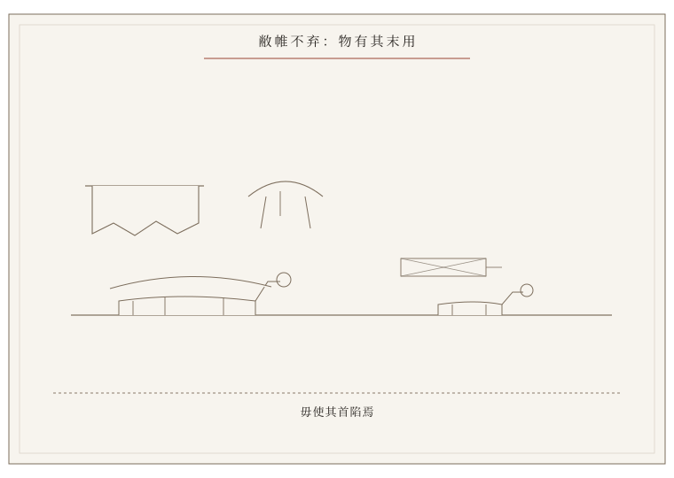

檀弓下 · 四·八十二 · 第 407 课
仲尼之畜狗死，使子贡埋之，曰：「吾闻之也，敝帷不弃，为埋马也；敝盖不弃，为埋狗也。丘也贫，无盖，于其封也，亦予之席，毋使其首陷焉。」路马死，埋之以帷。
说什么事：孔子的守犬死了，命子贡去埋。他说：「我听说，破帷不弃，是为埋马用的；破盖不弃，是为埋狗用的。我孔丘穷，没有盖，下葬的时候，也给它一领席，别让它的头直接陷进土里。」君之乘马路马死，用帷埋它。
落在哪一层：以「物之末用」为界。敝帷敝盖之所以不弃，因为它们还有最后一件用处：埋。
为何编在此位：上节论颂与祷，此节落到一条狗、一领席。一篇之丧，至此见其「末」。
【经】仲尼之畜狗死，使子贡埋之，曰：「吾闻之也，敝帷不弃，为埋马也；敝盖不弃，为埋狗也。丘也贫，无盖，于其封也，亦予之席，毋使其首陷焉。」路马死，埋之以帷。
【注】畜狗，驯守。／封当为窆。陷，谓没于土。／路马，君所乘者。其他狗马，不能以帷盖。
【疏】（底本此节无疏文。）
畜狗 所养之犬，驯而能守者。
敝帷 破旧的帷幔。
敝盖 破旧的伞盖。
封 当作「窆」，下棺入土。
予之席 给它一领席。
陷 没入土中。
路马 君所乘之马。
孔子的守犬死了，命子贡去埋。孔子说：「我听说，破帷不弃，是为埋马用的；破盖不弃，是为埋狗用的。我穷，没有盖，下葬的时候，也给它一领席，不要让它头直接陷进土里。」君乘之马死，用帷埋。
此章分两截：前截是夫子之语，后截是记者的补笔。
前截讲「物不可弃」，后截讲「不可逾等」。
一宽一严，合看才是全章。
第一层 「敝帷不弃」的道理 注未及，而文自明：不弃不是舍不得，是它还有一件用。
破旧之物，仍有其末用。 礼之俭，不是省，是用到最后。
第二层 「为埋马」「为埋狗」 一帷一盖，各有专属之用处。
礼对「余物」也编了位次：帷归马，盖归狗。 连破布都有一位，才是礼。
第三层 「丘也贫，无盖」 夫子不讳贫，也不因贫而废埋。
礼在此示范一个极难的分寸：能降其物，不能降其事。
第四层 「亦予之席」 无盖则用席。
「亦」字有一层意思：不是次的，是等的。 有什么用什么，礼不因器之减而减其敬。
第五层 「毋使其首陷焉」 一句最动人。
连一条狗的头，也不许陷进土里。 礼的边界，一直伸到「一张脸面」这一层。
第六层 「路马死，埋之以帷」 此为记者补笔。
君之乘马用帷，其他狗马不能用帷盖。 礼有等，连埋在土里的畜生都各有其等。
第七层 与《论语》对读 《论语》记厩焚，夫子「不问马」。
不问马，是急于问人；埋狗以席，是不肯废其礼。 两句合看，方见夫子之全。
与今日何干 今之弃物，多先算「还值几个钱」，少算「它还能做什么用」。
此章给一句：一物的最后一件用处，才是它真正的位次。
| 左 | 右 |
|---|---|
| 畜狗死 | 驯守之犬 |
| 使子贡埋 | 不以贱事自避 |
| 敝帷不弃 | 为埋马 |
| 敝盖不弃 | 为埋狗 |
| 丘也贫无盖 | 降其物 |
| 亦予之席 | 不降其事 |
| 毋使其首陷 | 礼至一面 |
| 路马埋以帷 | 有等 |
| 其他不用帷盖 | 不可逾 |
画一幅极简的埋畜场景，视点略俯。画面上部左侧画一幅破旧的帷，帷边有两处缺口；右侧画一顶破盖，盖骨外露。画面下部画一条地平线，线下左画一匹马的长形轮廓，线上方覆着那幅帷；线下右画一条犬的短形轮廓，其头之上覆着一领方格席。席与犬头之间留一线空隙，空隙处画一条短横线。不画草木。不画文字。赭色只用在那条短横线上。
